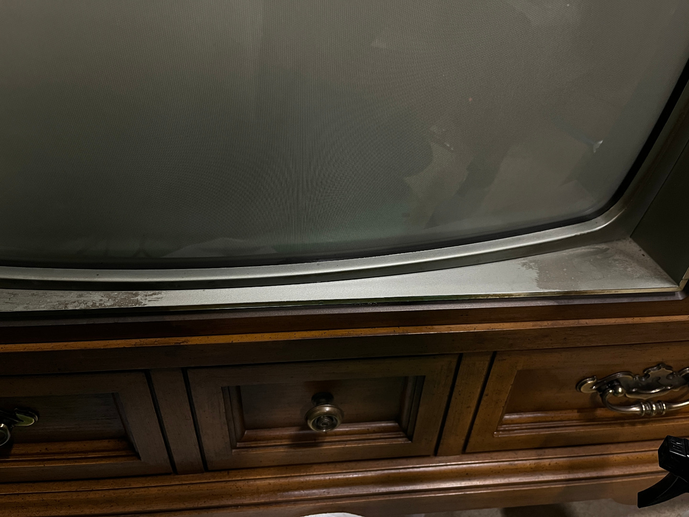
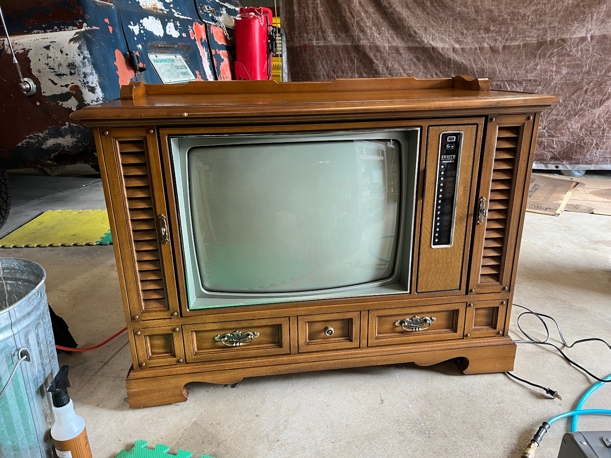
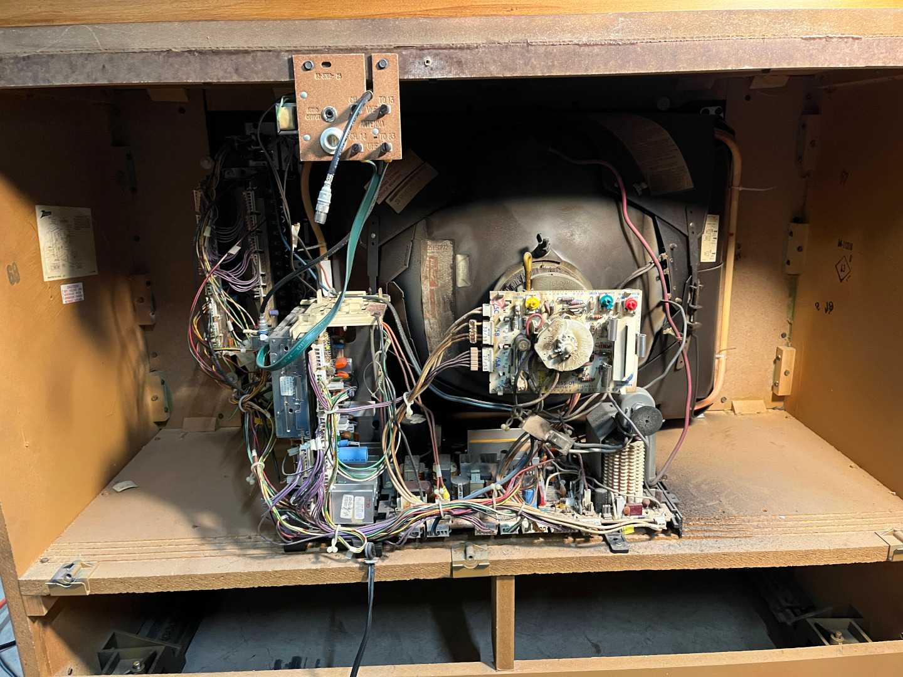
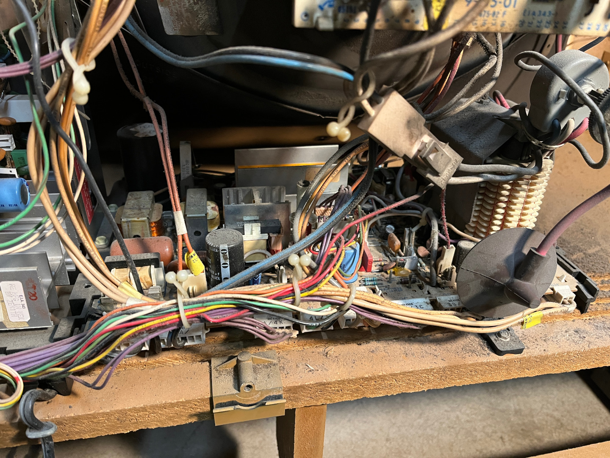
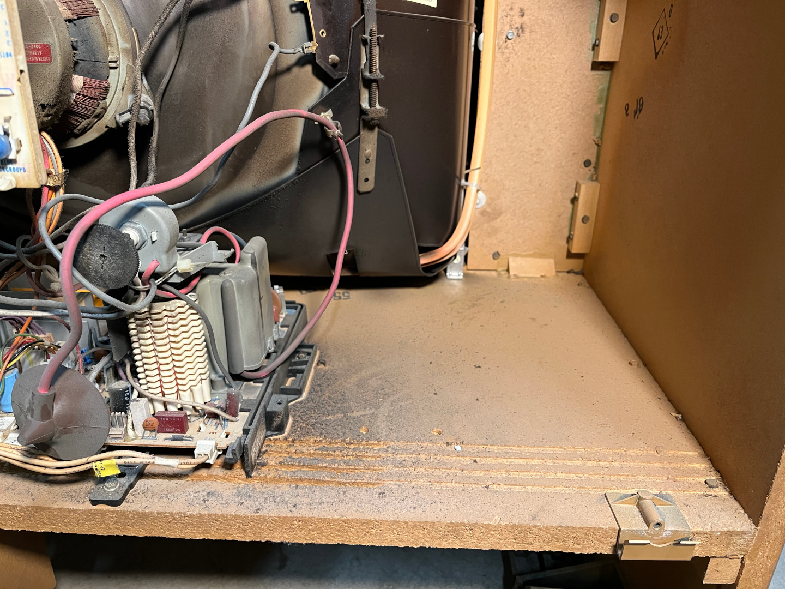

A few days ago, I opened Facebook Marketplace, and the first listing I saw was for this TV. I immediately messaged them, and they said "you could pick it up now if you want", so that's what I did. I got there, just barely got it to fit in my truck, and took it home.
here's how it looked originally. just looks a bit dusty, right?
wrong.
this thing had what I assume to be cigarette residue on it, all over the whole front and top. Cleaning it was definitely fun.
here's a sort of half-and-half before and after i cleaned the screen.
this thing was really dirty
and now its clean! hooray!
now without further ado, here's the inside:
  there's like, world record amounts of dust.
anyway, i used the air compressor & vacuum cleaner to get about 90% of the dust out, and it was looking
a lot better. then came time to power it on for the first time. enjoy this clip from an ASB campaign video my friend Simon filmed.
so the previous owner said in their listing that it didnt produce any image, and i expected what they meant is that it was just static, because
channel TV is pretty much dead. but no, when i turned it on, it took a little while for it to get bright enough for anything to be visible with the lights on.
and even then, it still wasn't very visible. and everything had a horrible red tint, with some flickering green. i had to bonk the top of the console
to get the green to come back on. and it would only work sometimes.
so long story short, this thing needed some work. which i expected, since it was a free tv.
first things first i started messing with the colour pots on the neck board, to see if that would do anything.
spoiler: NOPE!!!
well, technically it did do something, it just made the colours worse.
the next morning, i took the neck board off and scrubbed it down with isopropyl and deoxit, because it was dirty.
this is from the bottom side of the board. gross.
i went and resoldered every joint on this board, since multiple people online said that there could be issues with the solder joints.
i then used a transistor checker i bought at an antique store to check all four transistors on it, and they all behaved the same with the checker,
so most likely they're good.
next, i messed with the convergence rings. i ended up kinda completely messing up the colour, however after reseating the neck board, the green flickering issue started to become not an issue anymore. it's either that i reseated the neck board, or just running the tv for multiple hours. apparently if a crt is having issues after sitting for a long time, just letting it run for a long time will help balance out said issues. i'm not sure which one made the green start working. either way! i messed around a whole bunch with the rings, and got it to look at least somewhat more legible than when i first turned it on. colours are completely inaccurate though.
i grabbed my working crt and brought it out to the shop so i had a reference for how the colours should look. and i propped up a mirror in front of it so i could mess with the settings and see the screen without having to walk back and forth.
i then tried to mess with the adjustments to see if i could get the blue to show up. i could, kinda? i managed to adjust it so far off that the red rays were hitting the blue phosphors i think. but i couldnt get all three colours to show up in the same area.
this was definitely not the solution because while the ocean scenes were blue, everything else was completely messed up.
at this point, i was about to call it a night, but i wanted to do one more test, so i looked at each of the pins on the colour pots, and all of them had what appeared to be an okay looking signal. so that's good at least!
the next morning, I left the vcr on the language select menu, which gave me a really good opportunity to try and actually fine tune the colours to some degree. and i did i think! now, the blue most definitely isnt working, and i verified this even further by soldering wires onto the joints on the board for the crt pins for red, green, and blue, and i looked at them on the oscilloscope, and they again all looked fine. so it's most definitely the tube. but i did adjust the colours pretty well i think (pretty well for someone who is not at all experienced)
i mean don't get me wrong, its still not great, but it's a huge improvement from before.
i did just a little bit more adjusting, and this is where it's at currently:
i think this is the best i'm going to get it with the tools i have on hand. i plan on eventually buying a rejuvenator and testing the tube with it, and probably zapping the blue gun with it to see if it'll come back to life. but for now, that's where i'm leaving this project.